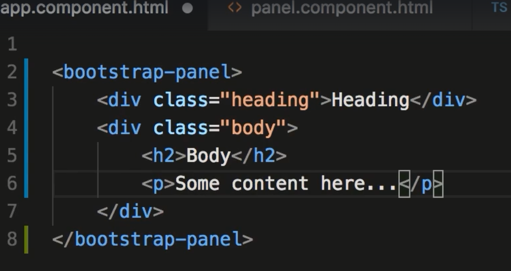
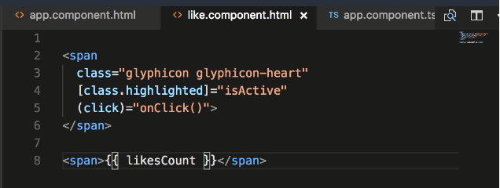

Section 5. Building Reusable components
52. Component API
- In order to make components reusable and usable from other components we need to add the ability to Input and Output values
53. Input Properties
- A way to have values passed into the component
- There are 2 ways: 1 is to import Input (from @angular/core) and use the @Input decorator on the variables that are accepting input
- The other is to add inputs to the @components decorator and list all input variables in an array. There is no need to import Input if done this way
- The preferred is method one, using the @Input method. A problem with method 2 there is a disconnect from the variable and the value in the inputs array.
- If you refactor code and rename the variable, the input value will not be related to the renamed variable

54. Aliasing Input Properties
- You can alias your input variables. this helps should you want to refactor your app. To reduce the chance off the calling app error.
- the above alias is used to input to the component below.
55. Output Properties
- Output works the same in the opposite direction. One difference is it needs to emit an event. You need to import the Output
- You also need to import EventEmitter from @angular/core
- the example below listens for a change event from the calling component. In this case app.component uses the favorite component in its html page.
- when the user clicks the favorite component, the change event will run the onFavoriteChange() function in app.component.
- however, there needs to be an event created. This is when you need an output event with the EventEmitter
- You create an output variable (this should be named the same as the event).
- As you can see below, the only thing that is happening regarding the output variable is it is sending an emit notification.
56. Passing Event Data
- Passing event data is done by including it in the emit function.
- The image below includes the $event Angular var that receives the values emitted from the Favorite component.
- The image below adds the newValue object data to emit. Below is an exported interface definition of the data being passed back. This is used for typescript casting and intellisense. will be imported by the calling to component.
- Below note the interface is imported and used as part of the parameter definition of the onFavoriteChange function.

57. Aliasing Output Properties
- Similar concept as aliasing for input.
- The below example adds change to the @Output cmd to create the alias. In this case the (change) event (from first image in section 56) remains the same.
58. Templates
- Use templateUrl for larger chunks of html. Use template for 5 lines of html or less.
59. Styles
- 3 ways to apply a style. Using the styleUrls:[], styles:[``]. You can use both types but the last applied is what is shown an ignores the first.
- You can also add a style tag in your html page. This is applied last and would take priority.
60. View Encapsulation
- Uses Shadow DOM. Allows scoped styles to elements without leaving the component.
- The example below shows an example of shadow DOM. It creates a root to the el var. h1 will now only be styled red on this element.
- Angular uses Encapsulation. It is declared in the @Component. The default value is emulated, meaning it emulates shadow dom.
- Pretty much never going to use this.
61 ngContent
- You would probably use ngContent if you wanted to create a reusable template where you could pass content to viewable areas.
- The example below creates a blank bootstrap panel component.
- Below: the html file uses ng-content tags to define where the calling component can place content. Use select to distinguish between ng-content tags.
- Below: by using the class "heading" the value Heading is pushed into the above ng-content .heading tag.

62. ngContainer
- ng-container simplies the output of your code by not having the need to provide a tag such as div to pass (see above example)
- Simply substitute the word div with ng-container. If you inspect the source in your browser you will see the div is not there.
Assignment Like Component
